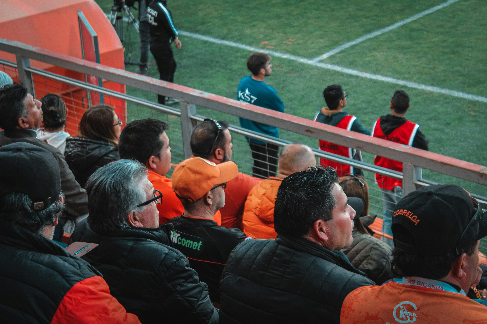

FAQ
Common questions
Short answers about the site, and about the fact that it is a university project.
Is this a real website?
No. Turnstile is a university project, designed and built by Sameer Roy for the UFCFES-30-1 Web Development module at UWE Bristol. It is a concept for a multi-club ticket platform and is not run by, or connected to, any club or ticket seller.
Can I buy tickets on this site?
No. Nothing on this site can be bought, reserved or refunded. It demonstrates fixtures, price categories and how a clear booking journey could look.
What is the booking fee?
The sample fee is £1.50 per ticket, shown separately in the price tables so the total is clear.
Who can buy concession tickets?
Concession pricing in this sample applies to over-65s and students. Real eligibility would be set by each club.
Are seats guaranteed together?
Seat selection is not built yet. When it launches, you will pick seats on a map and see adjacent availability.
Is the data real?
No. Club names are real for identification. Dates, kick-off times and prices are generated sample data and must not be relied on.
Does the site collect my data?
No. There are no forms, accounts or tracking. The only outside request is for fonts from Google Fonts.
